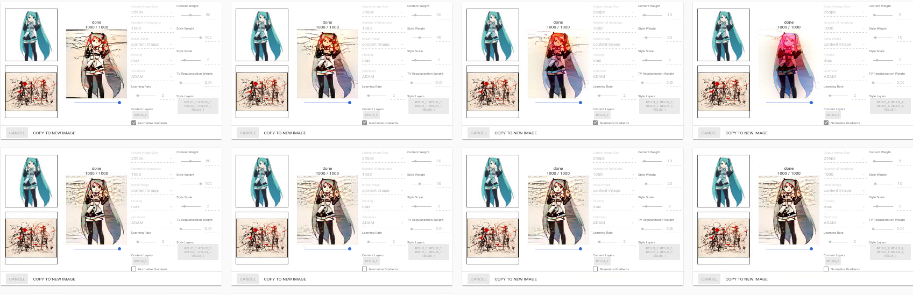

It can apply an image's style on another image.
The style transfer needs to run a large amount of iterations on an image to get good result. The result isn't instant - expect ~40secs per image on a machine with latest commercial GPU. We could improve this by throwing more GPUs at it, of course.
The output's look depend on content and style image, as well as a set of parameters that define how the process runs.
There isn't a set of parameters that work well for any combinations of content + style images, unfortunately. However, content images that look alike can reuse the same set and get good results.
Content and Style images that are similar in composition work better together. The algorithm matches similar patches between two images and transfers styles accordingly. If both images have backdrop with minimal textures, and a foreground that has more things going on, it'll transfer the backdrop's style to backdrop and foreground to foreground. TODO example
Textures transfer better than contextual images as style TODO examples
With normalize_gradients on, avoid setting tv_weight too high.
Both try to smoothen the images, so both on would just melt it.
TODO examples
When style_weight / content_weight is kept the same, and normalized is turned off, changing the magnitude of two weights don't really affect output; However with normalized on these magnitudes affect how blended the final image is. 
Below are a few hypothesis in the progress of testing.
tv_weight would make the noise patches bigger, giving the look of noise reduced.learning_rate affects the speed of learning, therefore affecting how much NN knows about the images.
-